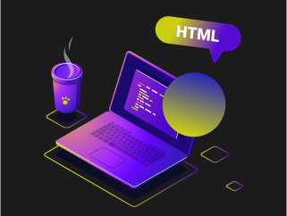
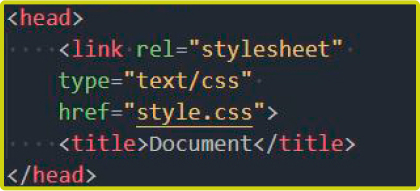
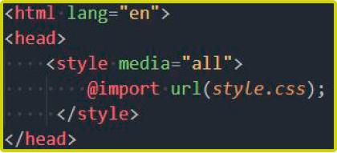
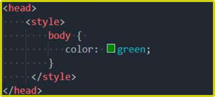
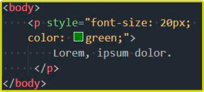

CSS.
Введение и обзор
веб-технологии

css
(от англ. Cascading Style Sheets) — каскадные таблицы стилей
CSS язык иерархических правил (таблиц стилей (en-US)), используемый для представления внешнего вида документа, написанного на HTML или XML (en-US) (включая различные языки XML, такие как SVG (en-US) и XHTML).
Использование CSS
CSS используется создателями веб-страниц для задания цветов, шрифтов, стилей, расположения отдельных блоков и других аспектов представления внешнего вида этих веб-страниц. Основной целью разработки CSS являлось отделение описания логической структуры веб-страницы (которое производится с помощью HTML или других языков разметки) от описания внешнего вида этой веб-страницы (которое теперь производится с помощью формального языка CSS). Такое разделение может увеличить доступность документа, предоставить большую гибкость и возможность управления его представлением, а также уменьшить сложность и повторяемость в структурном содержимом.
Кроме того, CSS позволяет представлять один и тот же документ в различных стилях или методах вывода, таких как экранное представление, печатное представление, чтение голосом (специальным голосовым браузером или программой чтения с экрана) или при выводе устройствами, использующими шрифт Брайля.
Способы подключения CSS к документу
-
Когда описание стилей находится в отдельном файле, оно может быть подключено к документу посредством элемента <link>, включённого в элемент <head>
 -
Когда файл стилей размещается отдельно от родительского документа, он может быть подключён к документу инструкцией @import в элементе <style>
 -
Когда стили описаны внутри документа, они могут быть включены в элемент <style>, который, включается в элемент <head>
 -
Когда стили описаны в теле документа, они могут располагаться в атрибутах отдельного элемента
